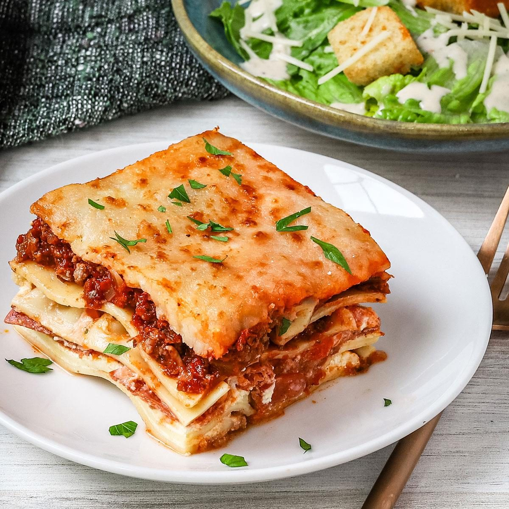

Lasagna
Home

Description
This is a fantastic make-ahead winter recipe withs sheets of pasta, bolognese and bechamel sauce, and cheese.
Ingredients
1/2 pounds ground beef
1 small onion, chopped
2-1/2 cups water